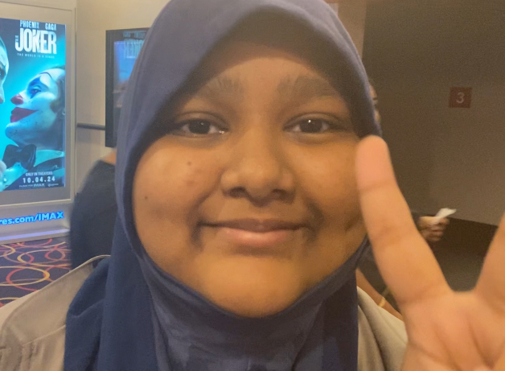

Khandaker Akter
Student at Thomas Edison CTE High School
I am a Web and Game Prototyping student at Thomas Edison CTE High School, I am learning to build interactive, fun digital experiences for players/users. This portfolio showcases my journey as I learn to turn codeing into creative playable, responsive web and game prototypes.